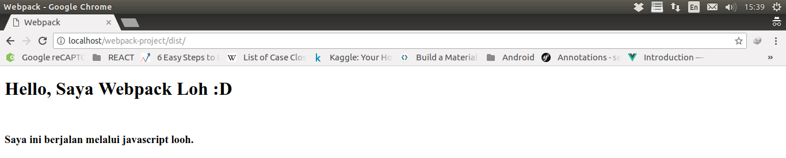

2.1. JavaScript
Sekarang, kita akan memasukkan file index.js
kedalam project yang dimasukan kedalam folder dist,
dan index.html akan menggunakan file tersebut.
Sehingga folder structure akan menjadi seperti ini:
Dan hasilnya akan seperti ini,

Mari kita pindahkan index.js dari dist ke src.
(Loh, kalau begitu bukannya index.js tidak bisa terbaca?)
Untuk itulah kita minta bantuan webpack.
Tetapi sebelum dimulai penggunaan webpack,
tambahkan script pada package.json terlebih dahulu
dan pindahkan index.js kedalam src.
Tambahkan entry yang menunjuk ke src/index.js pada webpack
lalu jalankan perintah npm run build:
(Wah, ada file baru didalam dist, tapi kok main.js?)
Oops... Mari kita tambah beberapa settingan lagi didalam webpack, yaitu output
lalu jalankan perintah npm run build sekali lagi.
(Yeay, sudah berhasil!).